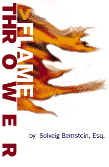

|

SERVICE
Indeed, such private content selection decisions are themselves acts of free
speech. They are just like a newspaper editor's decision not to run a certain
letter to the editor, or a publisher's decision not to publish a certain book. The
editor and publisher have created a means of distributing speech. The outlet
they have created is their property, and they have the right to decide what to do
with it. Other private companies in the speech distribution business are no
different.
Private content selection has the superficial feel of government censorship.
But it's dangerous to confuse the two. To see what can happen, let's accept the
premise that a private company that refuses to provide a forum for speech
violates the would-be speaker's free speech rights. This is a very serious charge.
Assuming government exists for some legitimate purpose, it surely exists to
protect our rights. If the ISP or OSP mentioned above is violating someone's
rights, it logically follows that the government should take action against them.
First, this means that the government would become responsible for
overseeing the distribution of computer network content. Clearly, this is not a
very good idea. Second, fortunately, it's fundamentally incompatible with the First
Amendment. The Supreme Court recognizes that "[t]he right of freedom
of thought protected by the First Amendment against state action includes both
the right to speak freely and the right to refrain from speaking at all." And the
right to refrain from speaking includes the right not to provide a forum for other
speakers (a misguided case or two to the contrary notwithstanding).
Any premise that leads us toward more government control over computer
networks should be questioned. Where does the notion that private content
selection violates free speech rights come from? Often, it stems from the view
that we have rights to speech because "more speech is good." On this view, free
speech rights float out in the ether, with no connection to any other aspect of our
world and come into play whenever we need "more speech." But free speech
rights are nothing like that. They're just another aspect of property rights and
only extend as far as property rights. Free speech doesn't mean I have the right
to walk into my neighbor's house to make a speech, or write an essay, however
enlightened, on the wall of an office building.
Another fallacy behind the premise is the view that free speech rights come
into play against anyone who has a lot of power over anyone else. And, the
theory goes, ISPs and OSPs just have too much power. They might, in some
very hypothetical unlikely future, turn into monopolists.
This argument also goes too far, too fast, in the wrong direction. ISPs and
OSPs don't have any more power over authors than the New York Times or any
big publishing house. Most parents have even more power over their children.
These kinds of power relationships are a necessary and natural part of life;
anyone who has something we want or need will have power over us. This
doesn't mean that if someone is exercising that power, he or she is violating our
rights. A theory of rights that aims to do away with these power relationships is
fundamentally unrealistic; its ultimate aim would have to be to abolish reality
itself. By contrast, it is both necessary and proper to expect rights to provide a
line of defense against the kind of power uniquely exercised by government--the
power of soldiers and police.
So, we might criticize private content selection decisions as intolerant. We
could point out that suppressing "revisionist" nonsense about the Holocaust
might backfire, and that the truth should be brought out in open discussion. We
might point out that overly restrictive ISPs and OSPs will lose customers. But
none of this has anything to do with rights of "free speech" protected against
true censorship by the First Amendment.
Solveig Bernstein is Assistant Director of Telecommunications & Technology Studies at the Cato Institute in Washingotn, D.C. |
Let's be clear: governments have done plenty to hurt the Net. By passing the
Communications Decency Act (CDA), the U.S. Congress extended television-
style censorship to the Net. Other countries are close behind.
But governments aren't the worst of the cybercensors--the CDA has been
declared unconstitutional and netizens are organizing internationally. Private
businesses pose the more sinister threat to free expression online.
Take America Online (AOL), which now boasts over six million members. In a
move akin to the paranoid antics of a kindergarten schoolmarm, AOL this
summer started deleting messages posted in Spanish and Portuguese since its
monitors can't understand them. Undercover AOL cops continue to yank
accounts of mothers who talk about breast feeding and mention the word
"nipple." The company's gapingly broad "terms of service" agreement allows it to
boot anyone, anytime, for any reason.
Or consider private universities. Carnegie Mellon University bans sexually-
explicit Usenet newsgroups--including innocuous ones devoted to Japanese
anime--and "offensive" comments posted online. Cornell University forced
students who offended campus feminists with an e-mail satire to plea-bargain to
"voluntary" punishment. Brigham Young University disciplines students for
downloading porn.
Don't forget net-filtering software. While busily touting itself as anti-censorship,
CyberSitter quietly blocks the National Organization
of Women and Queer Resources Directory Web sites. CyberPatrol prevents teen
pornhounds from investigating animal and gun rights pages and, inexplicably,
the Electronic Frontier Foundation's censorship archive. NetNanny cuts off AIDS
resources including the sci.med.aids and clari.tw.health. aids newsgroups.
SurfWatch bans domestic partner Web pages and Columbia University's award-
winning "Health Education and Wellness" site.
Now, I don't dispute that state censorship is more heinous. The government
has guns, police, and gallows to back up its laws. Anyone caught violating the
CDA gets slammed with a $250,000 fine and two years in Club Fed.
But to focus exclusively on the evils of government censorship is myopic.
Private censorship also shrinks the marketplace of ideas, a concept California
recognized when it passed a law striking down private speech codes at
universities.
That's why considering only the "speech rights" of businesses without looking
at the effects the *exercise* of the rights have is bonkers. It ignores the very real
effects of private censorship online which is more insidious and harder to
combat. And perhaps getting worse.
People claim the street as theirs on two occasions: to protest and to celebrate.
Where will the public squares exist in 21st century cyberspace?
Nowhere. Cyberspace is and likely will continue to be controlled by
corporations. Unlike in meatspace, there is no public forum for controversial
expression that offends the multinationals that jointly own the Net.
Sure, it's trivial to shift your embattled Web site from one Internet service
provider to another. Right now, at least. In Canada, Marc Lemire didn't find it so
easy when his "White Nationalist" site was kicked off of a number of ISPs in
quick succession. (The Simon Wiesenthal Center has been busy firing off terse
letters to Lemire's ISPs and clamoring for government crackdowns as well.)
This problem will become acute if the small number of Internet backbone
providers like MCI and Sprint, which number only in the single digits, buckle to
public pressure from groups like the Wiesenthalers and refuse to provide
connections to ISPs that host controversial Web sites.
If that happens, netizens will find their rosy vision of the Net as the birthplace
of a new form of democracy
overwhelmed by the sad reality of a new media oligarchy aborning.
|
||||
|
|||||